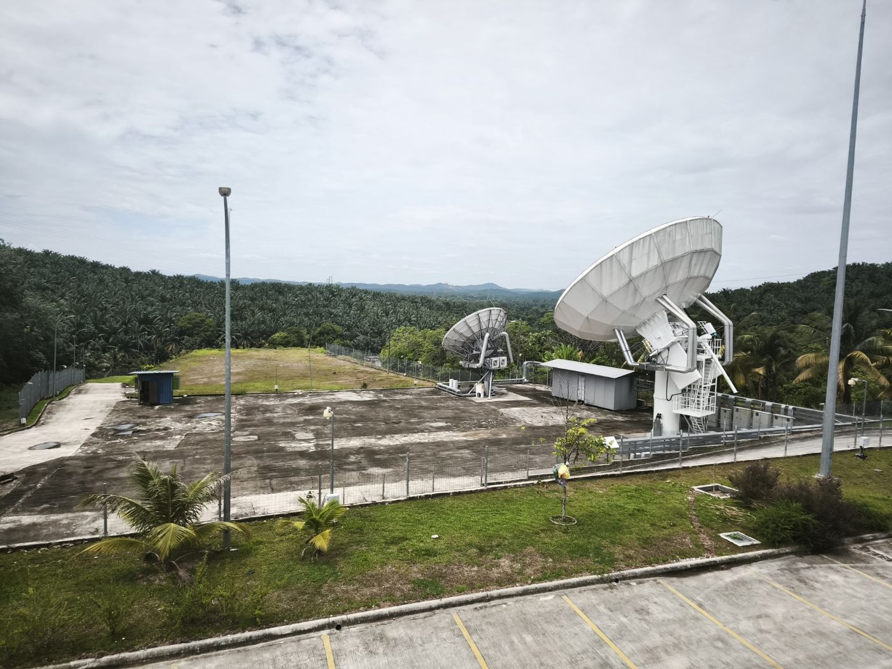
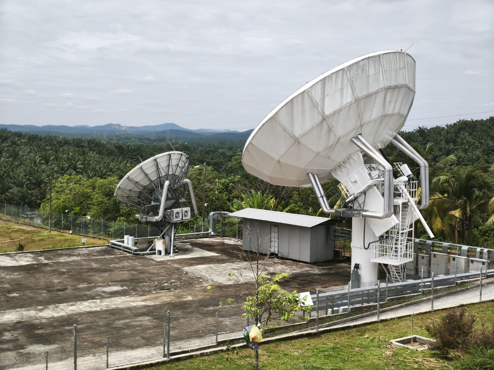
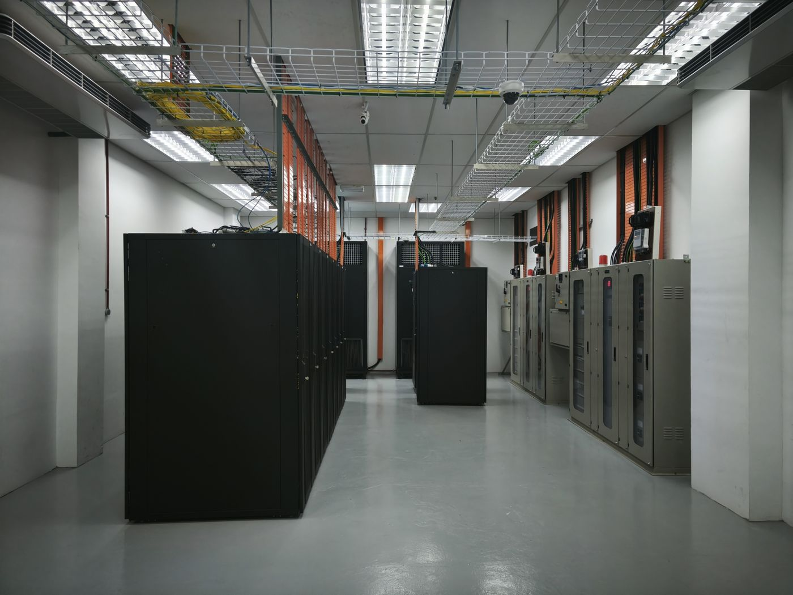
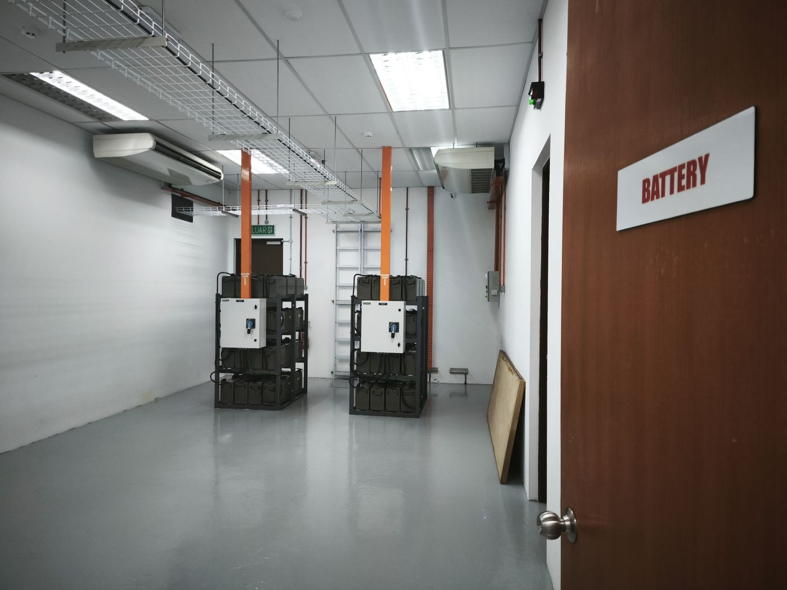

GEO · 138°E
APStar-5C
FS-1300 platform with 34 C-band and 32 Ku-band transponders plus a regional Ku-HTS payload. In service since 2018, design life over 15 years.
SGS supports a broad range of satellite communication applications — from hosting an operator's gateway on our antenna farm through to leasing capacity, hauling traffic onto fibre and racking equipment in our data hall.
Infrastructure and operational support for satellite gateway and ground-segment deployments. SGS provides the antenna positions, RF chain, equipment space, power and people required to bring a gateway into service — and to keep it in service.

Access to satellite capacity across the APStar geostationary fleet and the SPACESAIL LEO constellation, packaged as a managed service rather than raw megahertz.
FS-1300 platform with 34 C-band and 32 Ku-band transponders plus a regional Ku-HTS payload. In service since 2018, design life over 15 years.
Five-beam Ku-band user payload with a Ka-band gateway beam over Kuala Lumpur — optimised for aeronautical and maritime mobility.
Broad regional coverage supporting video distribution, data and telecom services across the Asia-Pacific.
Low-latency LEO capacity building toward a 648-satellite constellation, hosted through the SGS LEO gateway.
| Business model | What SGS provides | Typical customer |
|---|---|---|
| Gateway hosting | Antenna position, RF chain, equipment space, power, site operations | Satellite operators and constellation programmes |
| Capacity leasing | GEO and LEO space segment, managed and monitored | Service providers, ISPs, enterprise networks |
| End-to-end managed service | Space segment plus teleport, backhaul, IP and terminals | Enterprises without in-house satcom engineering |
| Colocation only | Carrier-neutral rack space, power and interconnection | Carriers, broadcasters, network operators |

Connectivity solutions for businesses and organisations requiring reliable communications beyond conventional terrestrial networks — plus satellite backhaul for locations where terrestrial infrastructure is limited or unavailable.
Connectivity services supporting mobile and maritime applications. APStar-6D's user beams are optimised for mobility, making the SGS gateway a natural landing point for vessels and aircraft operating across the region.



Secure infrastructure for hosting satellite, telecommunications and network equipment. Because the data hall shares a site with the teleport, gateway and IT infrastructure sit metres apart rather than cities apart.
Installation, commissioning, maintenance, remote support and operational assistance for satellite communication infrastructure — delivered by the team that runs the station day to day.
Antenna, RF and baseband installation, integrated with the customer's network architecture.
Line-up, link-budget verification and acceptance testing before traffic is carried.
Preventive and corrective maintenance, spares handling and day-to-day site operations.
Monitoring, remote hands and managed services covering cloud, OTT and IoT traffic growth.
A hybrid router solution integrating GEO and LEO networks for resilient, low-latency links that hold up when one network degrades.
Ultra-low-cost LEO connectivity for connected devices, sensors and remote monitoring — and for emergency use where terrestrial networks are unavailable.
Cost-effective bandwidth packages tailored to enterprise, oil & gas, maritime and rural deployments.
Offshore platforms, pipelines and remote field operations.
VSAT connectivity for vessels, fleets and port operations.
Plantation telemetry, sensors and rural connectivity.
Resilient and emergency communications for public agencies.
Send us your coverage area, throughput and hosting requirements and we will scope a service against the site's real capability.